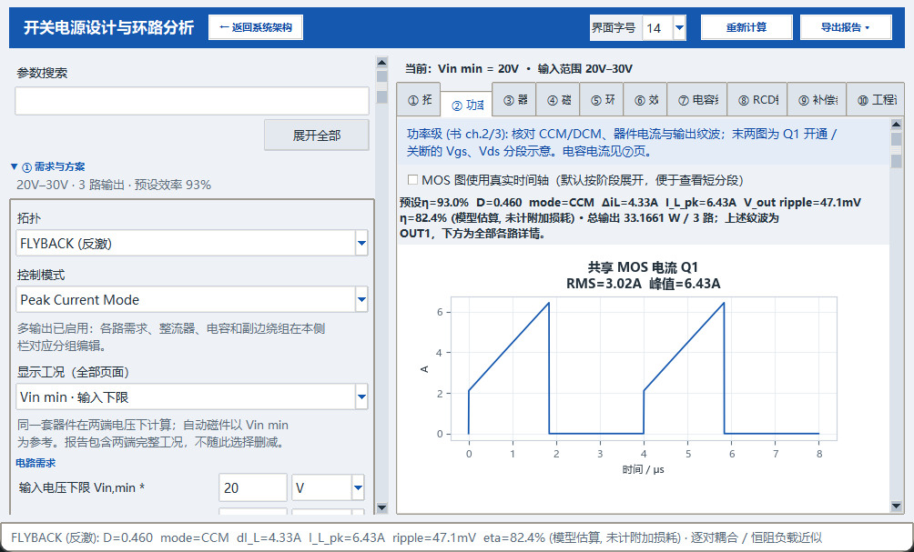

14 导出设计与系统报告
单元设计报告说明硬件、计算结果与工程判断。整机报告包同时保留供电架构、各单元报告和输入配置，便于从整机预算追溯到具体器件。
电源单元 → 导出报告 → 设计报告 · Word / Excel / Markdown，或回画布选择“生成系统报告包”
操作步骤
- 确认本次工程与评审内容 保存当前单元或画布版本。检查拓扑、共同硬件、输入边界以及工程验收证据。查看单元参数时可切换端点，导出按报告的工况范围生成。
- 选择单元报告格式 在右上角选择“设计报告 · Word / Excel / Markdown”。等待两端点准备完成，在保存对话框选格式和文件路径。Word 适合完整评审，Excel 适合按模块交换数据，Markdown 适合快速浏览摘要。
- 导出整机交付包 回到画布，按需核对系统是否要运行交叉调整率计算，然后“生成系统报告包”，保存 ZIP。查看底栏进度和完成的单元数。
- 核查交付缺口 先读结论，再查应力、磁件、环路、补偿和验收。整机 ZIP 先读 00 总览和 manifest.json，再按单元号找 Word、Excel 与配置。仿真证据按对应工程另行归档。

在右上角“导出报告”中区分设计报告、LTspice 对比与联合报告。系统报告包从画布顶部单独生成。
输入字段
| 字段或选项 | 单位或取值 | 输入的含义及用途 |
|---|---|---|
| Word 工程报告 | .docx | 先列工程判断，再附共同硬件、拓扑、工况对比、图表、假设与追溯。相同输入和结果可合并显示。 |
| Excel 模块对照报告 | .xlsx | 以功率级、损耗、磁件、环路和验收等工作表组织，双端点保持固定对照顺序。 |
| Markdown 摘要 | .md | 便于查看单元计算的文字摘要或在版本记录中引用。 |
| 系统报告包 | .zip | 含总览、预算、架构图、保存的系统与单元配置、各单元报告和生成状态清单。 |
| 电路对比与联合报告 | Word、ZIP / 运行目录 | 两类入口分别组织 LTspice 对比，或这一硬件的场解、矩阵回填、计算和电路仿真。 |
结果核对
报告关注同一配置和测量节点下的结果。先读关键结论和待复核项，再按 Vinmin、Vinmax 匹配模块表及波形。
ZIP 的 manifest.json 逐单元记录完成、部分工况未完成或失败。需要补齐时回到相应单元检查输入并重导。
异机查阅时同时保留与报告匹配的设计 JSON、必要的仿真工程和日志。看到结果页并不能替代核对证据状态。